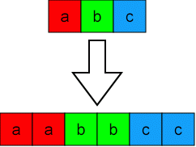

| Autor: | Wojciech Muła |
|---|---|
| Dodany: | 18-21.07.2001 |
Contents
Założenia:
; edi - wskaźnik na obraz wejściowy ; esi - wskaźnik na obraz wyjściowy img_width equ 320 ; szerokość ekranu w pixelach
Najprostszy sposób to powielenie pixeli, tak jak na rysunku.
mov eax, [edi] ; eax = |aa|bb|cc|dd| ; skalowanie shrd ebx, eax, 8 ; ebx = |dd|xx|xx|xx| shrd ebx, eax, 8 ; ebx = |dd|dd|xx|xx| shr eax, 8 ; eax = |00|aa|bb|cc| shrd ebx, eax, 8 ; ebx = |cc|dd|dd|xx| shrd ebx, eax, 8 ; ebx = |cc|cc|dd|dd| shr eax, 8 ; eax = |00|00|aa|bb| shrd ecx, eax, 8 ; ecx = |bb|xx|xx|xx| shrd ecx, eax, 8 ; ecx = |bb|dd|xx|xx| shr eax, 8 ; eax = |00|00|00|aa| shrd ecx, eax, 8 ; ecx = |aa|bb|bb|xx| shrd ecx, eax, 8 ; ecx = |aa|aa|bb|bb| ; zapis mov [edi ], ebx ; zapis w linii y mov [edi+4], ecx ; mov [edi+img_width ], ebx ; i y+1 mov [edi+img_width+4], ecx ;
mov eax, [edi] : eax = |pixel1|pixel0| mov ebx, eax shr ebx, 16 mov [esi ], ax ; linia y mov [esi+2], ax ; mov [esi+4], bx ; mov [esi+4], bx ; mov [esi+img_width ], ax ; linia y+1 mov [esi+img_width+2], ax ; mov [esi+img_width+4], bx ; mov [esi+img_width+4], bx ;
movd mm0, [edi] ; mm0 = |aa|bb|cc|dd|ee|ff|gg|hh| movq mm1, mm1 ; kopiuj mm0 punpcklbw mm0, mm0 ; mm0 = |ee|ee|ff|ff|gg|gg|hh|hh| punpckhbw mm1, mm1 ; mm1 = |aa|aa|bb|bb|cc|cc|dd|dd| movq [esi ], mm0 ; linia y movq [esi+8], mm1 ; movq [esi+img_width ], mm0 ; linia y+1 movq [esi+img_width+8], mm1 ;
Kod MMX dla obrazów 15bpp/16bpp i 32bpp jest w zasadzie taki sam --- wystarczy użyć, zamiast rozkazu punpck?BW, rozkaz punpck?WD lub punpck?DQ.
Poniższe przykłady dotyczą skalowanie obrazów grayscale.
mov ecx, img_width
_scale:
mov eax, [edi] ; eax = | d | c | b | a |
add ah, al
rol ah, 1 ; eax = | d | c |(a+b)/2| a |
rol eax, 16 ; eax = |(a+b)/2| a | d | c |
add ah, al
rcl ah, 1 ; eax = |(a+b)/2| a |(c+d)/2| c |
rol eax, 16 ; eax = |(c+d)/2| c |(a+b)/2| a |
mov [esi], eax
add esi, 4
add edi, 4
dec ecx
jnz _scale
segment .data
mmx_7lowest dd 0x7f7f7f7f, 0x7f7f7f7f
segment .text
mov ecx, img_width
; [edi] = ...|ii|hh|gg|ff|ee|dd|cc|bb|aa|
_scale
movq mm0, [edi] ; mm0 = | h| g| f| e| d| c| b| a|
movq mm1, [edi+1] ; mm1 = | i| h| g| f| e| d| c| b|
; do obliczenia średniej zostanie użyta uproszczona
; formuła: av = (a >> 1) + (b >> 1)
movq mm2, mm0 ;
psrlq mm1, 1 ; a/2
psrlq mm2, 2 ; b/2
pand mm1, [mmx_7lowest] ; wyzeruj najstarsze bity
pand mm2, [mmx_7lowest] ; to wysunięte bity starszych bajtów
; zapis 'ab' oznacza (a+b)/2
padd mm1, mm2 ; mm1 = |hi|gh|fg|ef|de|cd|bc|ab|
; teraz wystarczy połączyć wyniki
movq mm2, mm0
movq mm3, mm1
punpcklbw mm0, mm1 ; mm0 = |de| d|cd| c|bc| b|ab| a|
punpcklbw mm2, mm3 ; mm2 = |hi| h|gh| g|fg| f|ef| e|
movq [esi ], mm0
movq [esi+8], mm1
dec ecx
jnz _scale
Powyższe procedury skalują pojedyncze linie, oto algorytm na skalowanie całego obrazu:
temp1 = skaluj_linie(y) ; w temp1 przeskalowana linia y temp2 = skaluj_linie(y+1) ; w temp2 przeskalowana linia y+1 ; zapisz do obrazu wynikowego linia[y] = temp1; linia[y+1] = średnia(temp1, temp2); linia[y+2] = temp2;